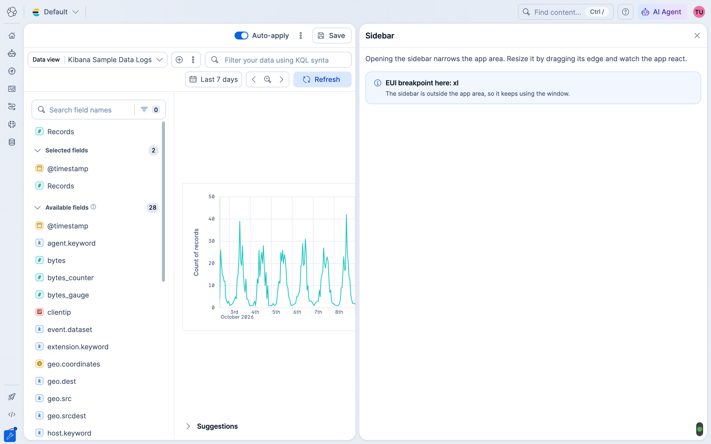
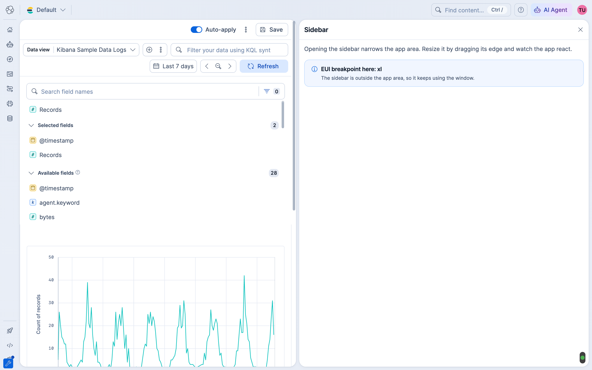
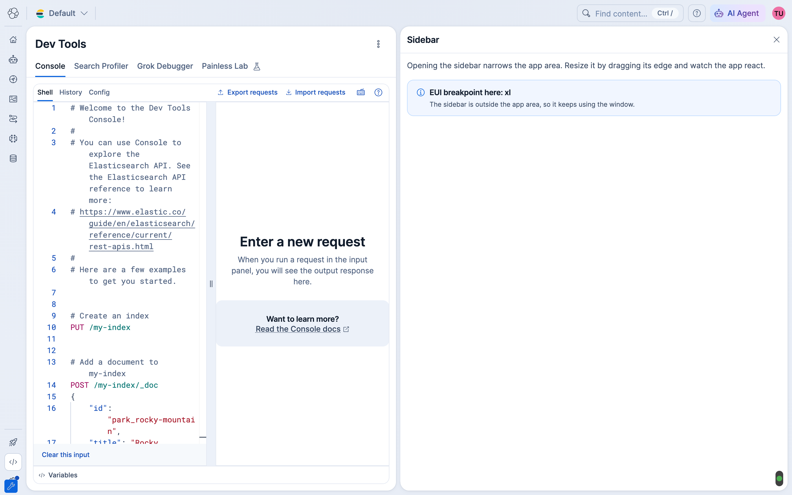
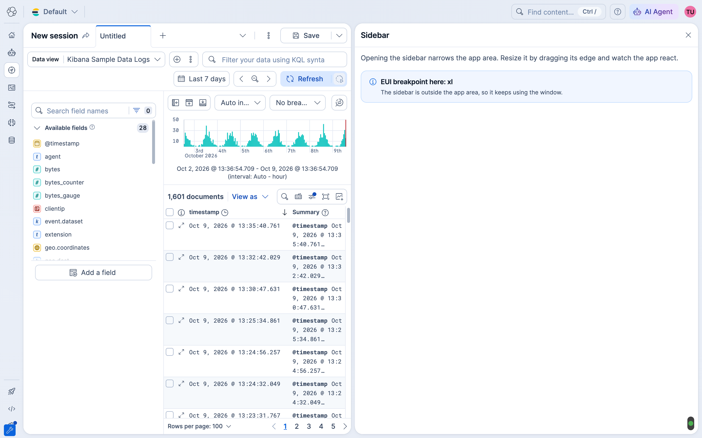
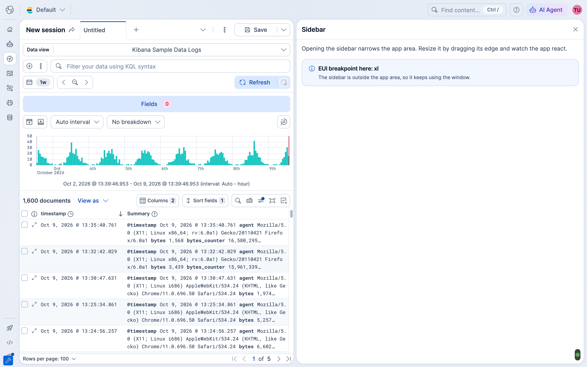

Responsive Kibana: container queries PoC
Making EUI breakpoints follow the app area instead of the window. What I learned, and where I'd like input on next steps.
Making EUI breakpoints follow the app area instead of the window. What I learned, and where I'd like input on next steps.
elastic/kibana-team#3040 · EUI + Kibana PoC · Anton Dosov · October 2026
The problem
| Window | App area | Should be | EUI uses |
|---|---|---|---|
| 1920 | ~1104 | l | xl |
| 1440 | ~768 | m | xl |
| 1280 | ~656 | s | xl |
Breakpoints: xs 0 · s 575 · m 768 · l 992 · xl 1200. Sidebar open, nav expanded.

How EUI does breakpoints
| CSS · mixins | JS · hooks | |
|---|---|---|
| API | euiBreakpoint, euiMinBreakpoint, euiMaxBreakpoint inside Emotion styles |
useCurrentEuiBreakpoint, useIsWithinBreakpoints, EuiShowFor/HideFor |
| Changes | Styles. Same markup, the browser applies the rule. | What renders: markup, props or behavior. React re-renders. |
| Measures | @media, so the window |
EuiProvider listens to window resize |
| Reach | 22 EUI style files, incl. flex group, used in 4,877 Kibana files. Kibana's own code: 48 files use the mixins, 67 write raw @media. |
15 EUI components, incl. description list, used in 231 Kibana files. Kibana's own code: 127 files use the hooks. |
| PoC | Track 1. @media → @container. Global, no per-app work. |
Track 2. Hooks measure the nearest container instead of the window. |
CSS How it works
bodyfallbackheader→ bodyapp areacontainerpage→ app areaflyout→ bodyOne attribute on the app area wrapper. Every euiBreakpoint() mixin now resolves against it.

This covers all code that uses the EUI breakpoint mixins, including flex group in ~4,900 Kibana files.
CSS What it doesn't cover
@media on the window@media. 67 Kibana files keep using the window until they move to the mixins.
JS How it works
React tree · what hooks see
EuiProviderno DOM nodeConsoleuseCurrentEuiBreakpoint()DOM · where the container is
bodyapp areacontainerdivmount elementconsoleEuiProvider the mount element→
closest(…) → app area→
ResizeObserver → 'm'
The app passes the element to its provider. Roots that don't pass it keep the window, same as today.
The provider renders a hidden marker on the first render, reads its parent, then renders the app. No app changes, one extra render per root.
EuiProvider renders no DOM node, so on its own it can't tell where it sits on the page.
JS Real app · Discover


Discover's own hook now sees s. Console switches to its vertical layout the same way.
CSS + JS Demo · Discover
Learnings
EuiShowFor content and reset form state.Next steps
@media.@media to the mixins and deprecate direct @media. EUI prefers CSS over JS in its components.PoC PRs: elastic/eui#10192 and elastic/kibana#296462. Try it: run Kibana with --run-examples, open the Responsive app area example.